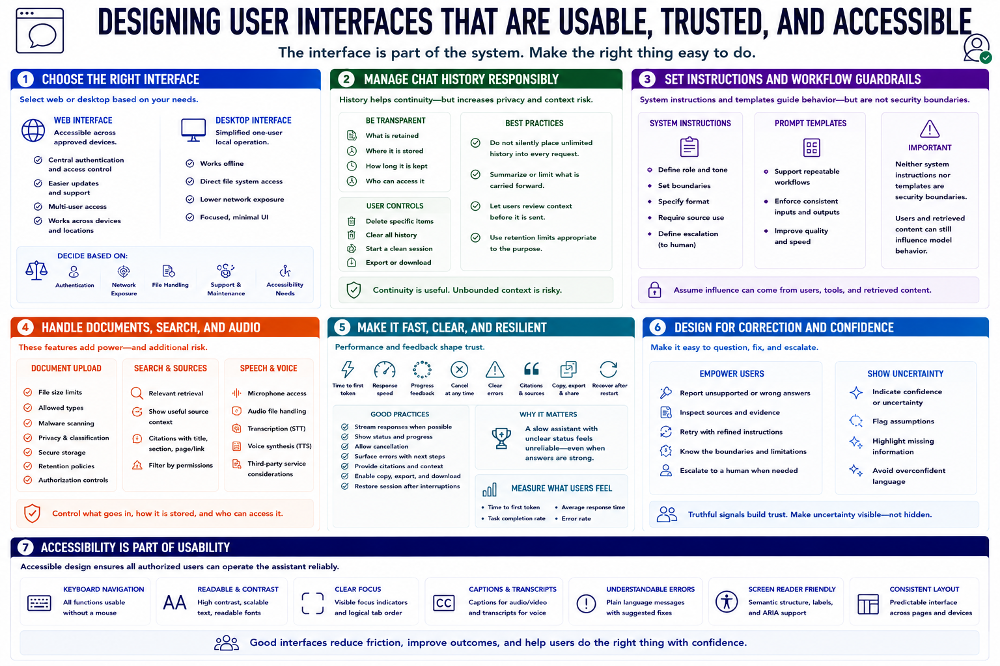

Interface and User Experience
Connecting to LMS... Progress: in progress

Narration
A web interface can make the assistant accessible across approved devices, while a desktop interface may simplify one-user local operation. Choose according to authentication, network exposure, file handling, support, and accessibility needs.
Chat history helps continuity but increases privacy and context risk. Let users understand what is retained, where it is stored, and how to delete or start a clean session. Do not silently place unlimited history into every request.
System instructions define role, boundaries, format, source use, and escalation. Prompt templates support repeatable workflows. Neither is a security boundary; users and retrieved content can still influence model behavior.
Document upload needs file-size, type, malware, privacy, storage, retention, and authorization controls. Search should show useful source context. Speech and voice features add microphones, audio files, transcription, synthesis, and possibly third-party services.
Usability includes time to first token, response speed, progress feedback, cancellation, errors, citations, copy or export, and recovery after restart. A slow assistant with unclear status feels unreliable even when answers are strong.
Design for correction. Users should flag unsupported answers, inspect sources, retry safely, and know when to contact a human. The interface should make uncertainty and boundaries visible without burying the workflow in warnings.
Accessibility is part of usability. Keyboard navigation, readable contrast, clear focus, captions or transcripts for audio, understandable errors, and screen-reader-friendly structure determine whether authorized users can operate the assistant reliably.